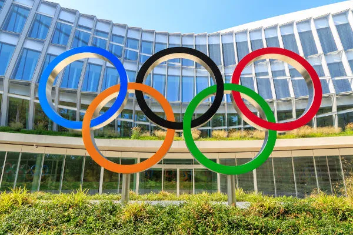
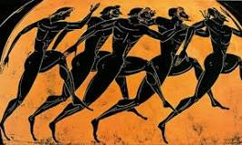
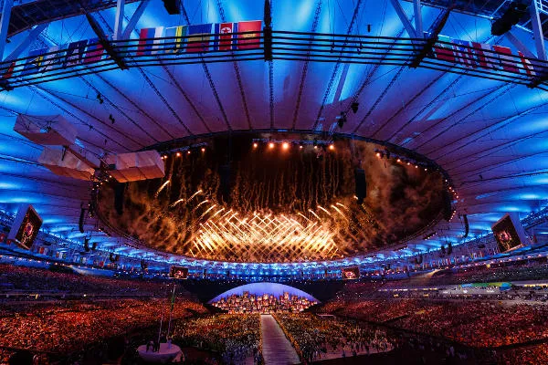

As Olimpíadas reúnem países de todos os continentes para disputar diferentes modalidades esportivas. Os Jogos Olímpicos são um dos maiores eventos do mundo.
As Olimpíadas são o maior evento esportivo do mundo, no qual países dos cinco continentes se reúnem para competir em diversas modalidades. Acontecem a cada quatro anos e são divididos entre as edições de verão e de inverno. Atletas com deficiência disputam as chamadas Paralimpíadas. A promoção da paz, a integração e a união entre os países compõem o objetivo principal dos Jogos Olímpicos. De acordo com o Estatuto Olímpico, a intenção é garantir o desenvolvimento harmonioso da humanidade por meio da prática esportiva.
As Olimpíadas na Antiguidade surgiram por volta de 776 a. C., conforme registros históricos. Entretanto, não há consenso entre os pesquisadores sobre um fato exato que tenha marcado o início dos jogos. Na Antiguidade, os jogos estavam associados a rituais religiosos. Nesse sentido, os gregos homenageavam Zeus, rei dos deuses na mitologia grega. Os jogos recebem esse nome, pois começaram na cidade grega de Olímpia, situada no sudoeste da Grécia. As competições aconteciam nos momentos de trégua, pois naquela época eram comuns conflitos entre as cidades-estado gregas. A situação de trégua era decretada dois meses antes dos jogos, que ocorriam também de quatro em quatro anos, só que sempre em uma mesma cidade, Olímpia. O anúncio do evento era dado por mensageiros em diferentes regiões, para que as pessoas pudessem viajar para Olímpia em segurança, que os conflitos estariam interrompidos durante a competição.
Mulheres, estrangeiros e escravos eram proibidos de participar dos jogos antigos. Nem mesmo assistir era permitido às mulheres. Era dado aos vencedores das competições uma coroa de oliveira, que representava a supremacia moral e espiritual dos Jogos Olímpicos. O imperador romano Teodósio baniu a realização dos jogos no ano de 393 d. C., de acordo com registros oficiais. O fato marcou o fim das Olimpíadas na Antiguidade.
As Olimpíadas modernas foram idealizadas pelo pedagogo e esportista francês Barão Pierre de Coubertin. Escavações arqueológicas feitas em Olímpia entre os anos de 1875 e 1881 e o legado da Grécia inspiraram a criação do Comitê Olímpico Internacional (COI), em 1894. Coubertin foi o responsável pela fundação do órgão que regulamenta a competição. A primeira edição dos Jogos Olímpicos modernos foi realizada na cidade de Atenas, em 1896. Participaram 14 países e 241 atletas homens, pois as mulheres eram proibidas de competir. Atletismo, ciclismo, esgrima, ginástica, halterofilismo, luta, natação e tênis foram as modalidades participantes. A premiação com medalha de ouro passou a ser feita somente em 1904. Na primeira edição, os vencedores receberam medalhas de prata, e os demais foram premiados com medalhas de cobre e ramos de louro. Desde seu início, as Olimpíadas só não foram realizadas nos anos de 1916, por causa da Primeira Guerra Mundial, e em 1940 e 1944, devido à Segunda Guerra Mundial. Em 2016, a cidade do Rio de Janeiro sediou as Olimpíadas. Mais de 10 mil atletas concorreram em 41 modalidades esportivas. Nessa edição, o golfe e o rúgbi voltaram a participar dos jogos, ambos os esportes não participavam desde 1924.
